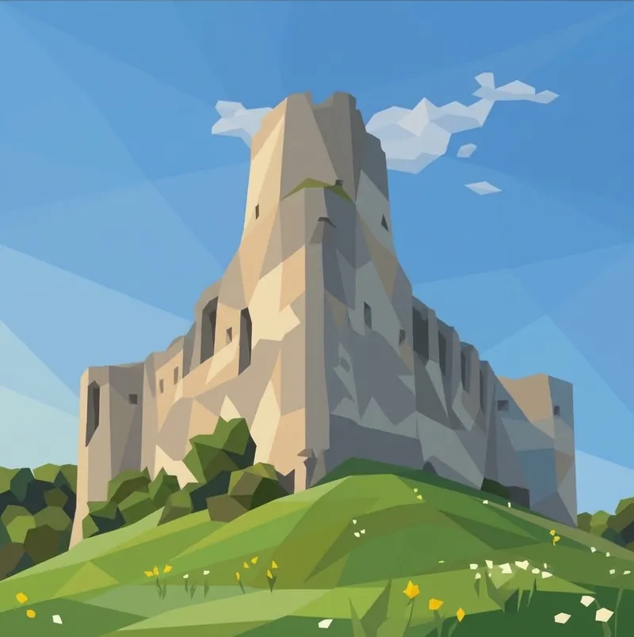

Руїни замків
Чимало подільських замків дійшли до нас у вигляді руїн. Навіть зруйновані, вони вражають масштабом стін і майстерністю будівничих. Серед таких пам'яток — замки в Скалі-Подільській, Сатанові, Барі, Червоногородський замок у селі Нирків на Тернопільщині.


Збереження таких пам'яток потребує консервації мурів і впорядкування території — так руїни стають доступними для туристів і не руйнуються далі.